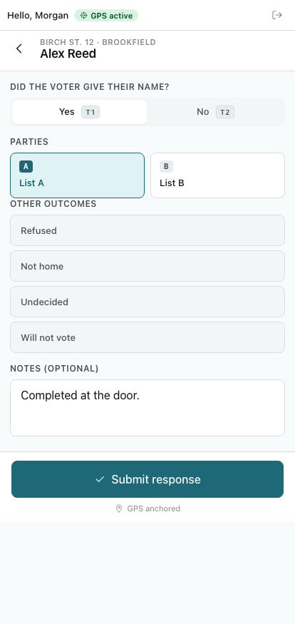
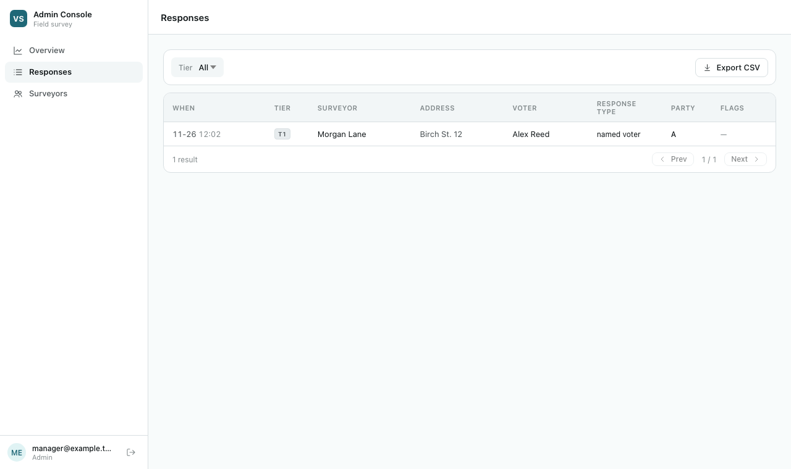
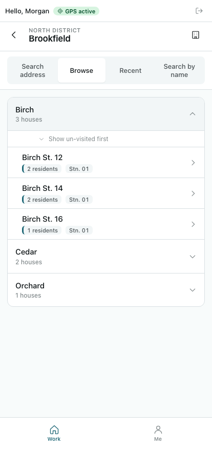

Field Survey Desk
Volunteers record doorstep visits on their phones. Field managers can see which door was visited and what answer was recorded.
Follow one visit across two screens. The volunteer submits the survey, and the manager sees the response against the same address.





